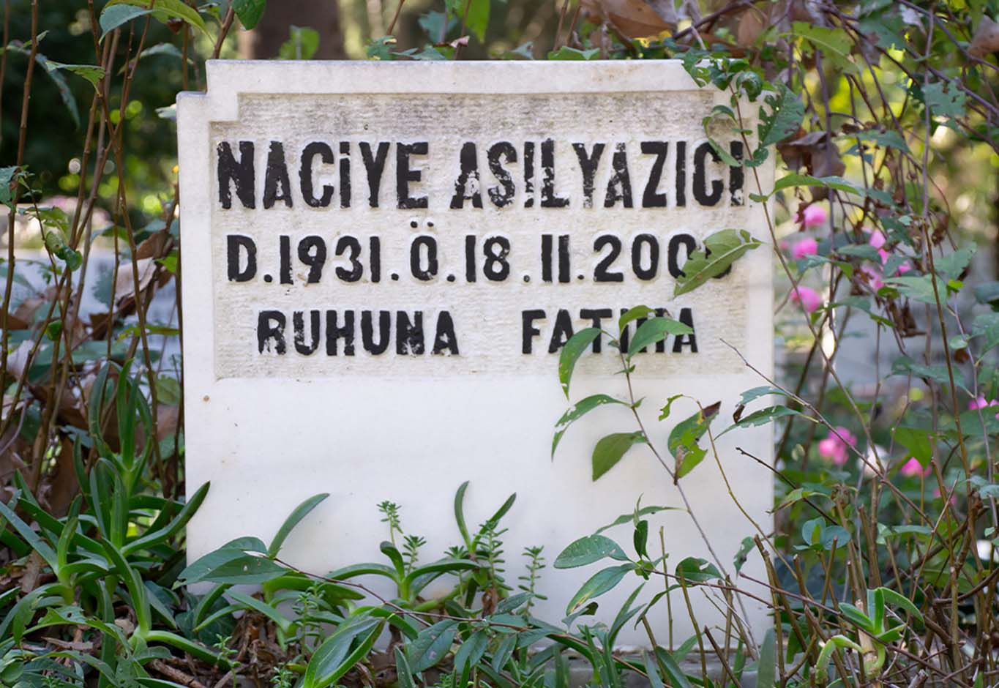
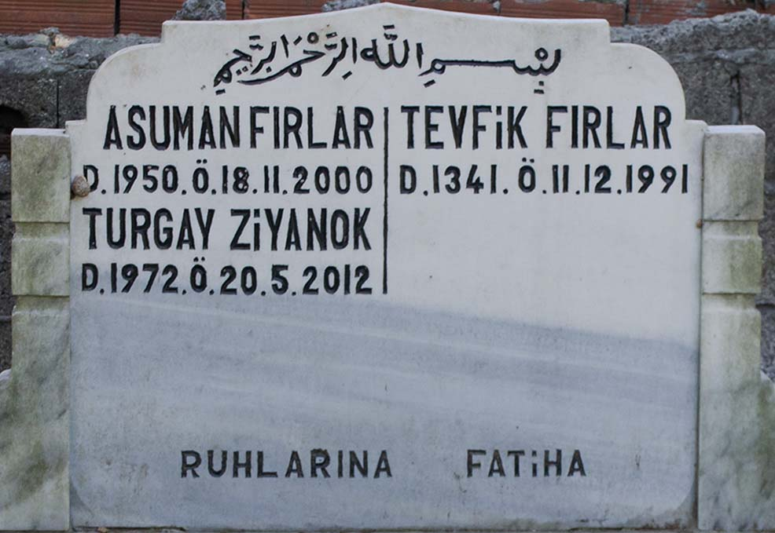
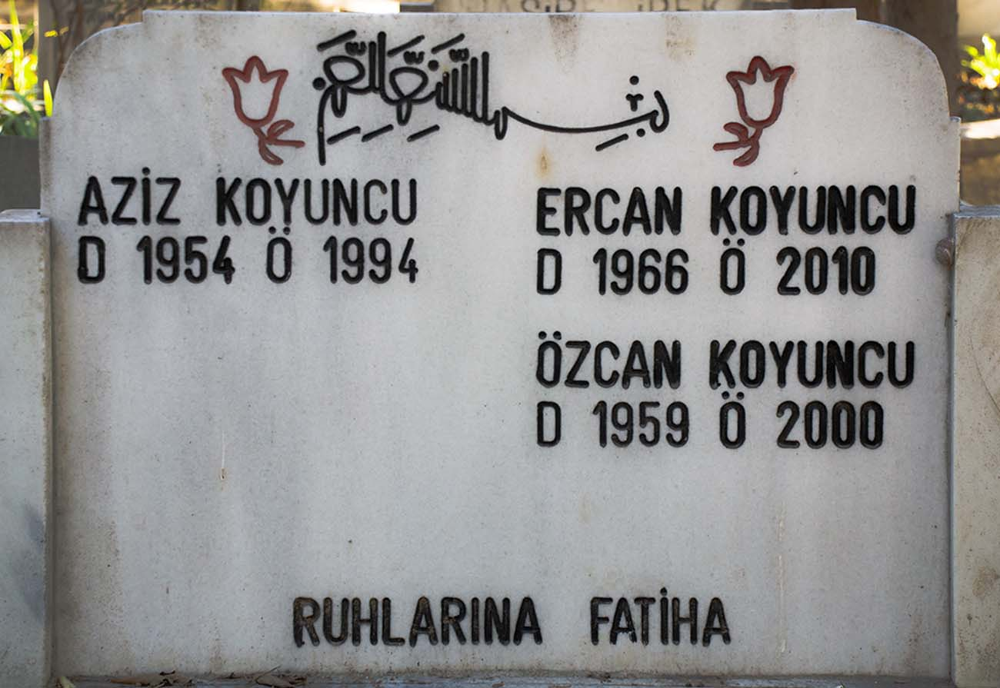

Coasts of Lives, 2018



It consists of a photographic research documenting my quest to find the graves of people who died on 18.11.2000, the day I was born, and were buried in Istanbul. I began this work by reflecting on the point at which, in the ordinary course of life, as I move through time and space, I touch the singular lives just beyond me, and the ones I can never touch within the boundaries of time and space. The work explores how we navigate the boundaries between public and private spaces, as these burial sites transform the deeply personal into public monuments.